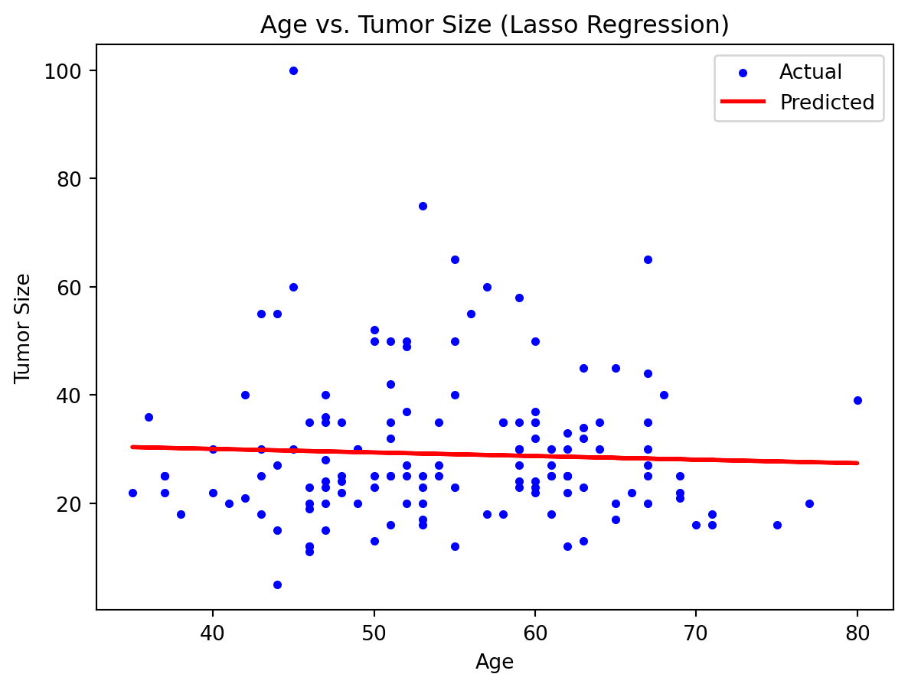
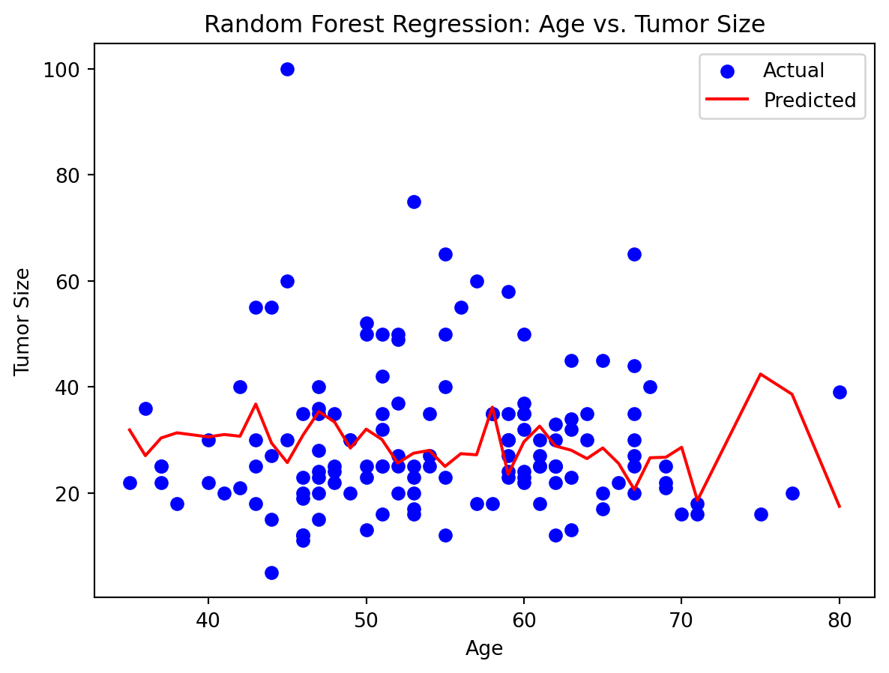

# Import necessary libraries
import numpy as np
import pandas as pd
from sklearn.model_selection import train_test_split
from sklearn.metrics import mean_squared_error, r2_score
import matplotlib.pyplot as plt
from sklearn.linear_model import Lasso
from sklearn.ensemble import RandomForestRegressorLasso Regression
Regression analysis is a powerful statistical technique that plays a vital role in numerous fields, including healthcare. In the context of breast cancer research, regression can be used to visualize and analyze relationships between numeric variables in different studies. Lasso regression is a specific type of regression in which there is a penalizer in the linear regression form to help prevent overfitting. This method allows for better interpretability and more accurate predictions with regression methods. The code below performs Lasso regression using a breast cancer dataset with several variables. The code studies potential relationships between the age of a patient and the tumor size.
# Load the dataset
data = pd.read_csv('gbsg.csv')
data.head()| Unnamed: 0 | pid | age | meno | size | grade | nodes | pgr | er | hormon | rfstime | status | |
|---|---|---|---|---|---|---|---|---|---|---|---|---|
| 0 | 1 | 132 | 49 | 0 | 18 | 2 | 2 | 0 | 0 | 0 | 1838 | 0 |
| 1 | 2 | 1575 | 55 | 1 | 20 | 3 | 16 | 0 | 0 | 0 | 403 | 1 |
| 2 | 3 | 1140 | 56 | 1 | 40 | 3 | 3 | 0 | 0 | 0 | 1603 | 0 |
| 3 | 4 | 769 | 45 | 0 | 25 | 3 | 1 | 0 | 4 | 0 | 177 | 0 |
| 4 | 5 | 130 | 65 | 1 | 30 | 2 | 5 | 0 | 36 | 1 | 1855 | 0 |
# Define your feature matrix (X) and target variable (y)
X = data[['age']]
y = data['size']We want to split our data into training and testing data for model building/testing purposes.
# Split the data into training and testing sets
X_train, X_test, y_train, y_test = train_test_split(X, y, test_size=0.2, random_state=4)# Create a Lasso Regression model
model = Lasso(alpha=1.0)# Fit the Lasso model
model.fit(X_train, y_train)Lasso()# Make predictions for the 'age' values
y_pred = model.predict(X_test)
y_predarray([27.98806952, 29.37736335, 28.12038322, 29.4435202 , 28.38501062,
28.25269692, 30.30355924, 29.17889281, 28.58348116, 28.25269692,
29.17889281, 28.12038322, 28.51732432, 29.11273596, 29.24504965,
29.5758339 , 28.45116747, 28.71579486, 28.78195171, 28.31885377,
28.25269692, 29.7081476 , 29.90661815, 28.71579486, 28.64963801,
29.24504965, 28.18654007, 29.5758339 , 29.24504965, 29.11273596,
29.37736335, 29.5758339 , 28.91426541, 29.5758339 , 28.64963801,
28.78195171, 28.12038322, 29.7081476 , 28.51732432, 29.64199075,
29.5758339 , 28.71579486, 28.71579486, 28.25269692, 29.17889281,
28.71579486, 30.23740239, 29.64199075, 28.38501062, 29.17889281,
29.37736335, 29.77430445, 28.51732432, 28.58348116, 28.98042226,
29.8404613 , 28.58348116, 28.78195171, 29.7081476 , 29.50967705,
28.58348116, 28.91426541, 27.39265788, 28.25269692, 29.37736335,
28.58348116, 30.23740239, 28.78195171, 29.3112065 , 29.17889281,
29.04657911, 28.64963801, 28.78195171, 29.04657911, 29.04657911,
28.84810856, 28.05422637, 29.8404613 , 28.25269692, 29.4435202 ,
28.51732432, 29.4435202 , 29.5758339 , 28.51732432, 29.3112065 ,
29.64199075, 29.24504965, 28.71579486, 28.58348116, 29.37736335,
28.38501062, 30.03893184, 30.36971609, 28.25269692, 29.50967705,
29.64199075, 29.3112065 , 29.8404613 , 28.64963801, 29.3112065 ,
29.64199075, 29.5758339 , 30.17124554, 29.64199075, 29.5758339 ,
29.97277499, 29.50967705, 28.58348116, 29.50967705, 29.90661815,
29.3112065 , 29.11273596, 29.77430445, 28.78195171, 27.98806952,
28.84810856, 28.78195171, 29.24504965, 29.8404613 , 29.3112065 ,
28.71579486, 27.59112843, 28.84810856, 29.17889281, 28.71579486,
29.24504965, 28.78195171, 28.64963801, 29.3112065 , 30.23740239,
29.04657911, 29.04657911, 30.03893184, 29.77430445, 29.64199075,
27.72344213, 29.77430445, 28.45116747])After making predictions using the test data, we want to verify the accuracy by computing the mean squared error and r-squared value.
# Evaluate the model
mse = mean_squared_error(y_test, y_pred)
r2 = r2_score(y_test, y_pred)print("Mean Squared Error: ", mse)
print("R-squared: ", r2)Mean Squared Error: 193.888239405254
R-squared: -0.0036539165862292666# Create a scatter plot
plt.scatter(X_test, y_test, color='blue', label='Actual', s=10)
plt.plot(X_test, y_pred, color='red', label='Predicted', linewidth=2)
plt.xlabel('Age')
plt.ylabel('Tumor Size')
plt.title('Age vs. Tumor Size (Lasso Regression)')
plt.legend()
plt.show()
Based on the output of our model and graph, it can be seen that there is a slightly negative relationship between the age of a patient and tumor size. This is indicated by r-squared value as well. Since we have an r-squared value of about -0.003, this means that not only is there a slightly negative relationship between age and tumor, but also a very weak/poor fit for the data, which can also be seen in the plot.
Random Forest Regression
From our previous Lasso regression model, the results were not as accurate as we were hoping for. However, we can try another type of regression model. This time, we will experiment with a nonlinear regression model known as RandomForest regression. It is a method to predict continuous values using a group of decision trees. Our linear approach using Lasso yielded a subpar result, so now let us experiment and examine how the RandomForest regressor compares.
# Create a Random Forest Regressor
rf_model = RandomForestRegressor(n_estimators=100, random_state=4)# Fit the model to the training data
rf_model.fit(X_train, y_train)RandomForestRegressor(random_state=4)# Make predictions on the test set
y_pred = rf_model.predict(X_test)
y_predarray([18.59770635, 32.03502357, 26.73878175, 28.46088973, 28.4890492 ,
20.64167063, 27.03738384, 27.49484865, 28.85783428, 20.64167063,
27.49484865, 26.73878175, 28.06173833, 28.02880346, 25.6333015 ,
35.35825081, 26.47801083, 29.64876783, 23.51566776, 25.58499862,
20.64167063, 25.72670516, 30.700719 , 29.64876783, 32.61029741,
25.6333015 , 26.64267238, 35.35825081, 25.6333015 , 28.02880346,
32.03502357, 35.35825081, 27.19539171, 35.35825081, 32.61029741,
23.51566776, 26.73878175, 25.72670516, 28.06173833, 30.93746124,
35.35825081, 29.64876783, 29.64876783, 20.64167063, 27.49484865,
29.64876783, 30.37329726, 30.93746124, 28.4890492 , 27.49484865,
32.03502357, 29.42056086, 28.06173833, 28.85783428, 27.40908095,
36.76734676, 28.85783428, 23.51566776, 25.72670516, 33.36409916,
28.85783428, 27.19539171, 17.48 , 20.64167063, 32.03502357,
28.85783428, 30.37329726, 23.51566776, 30.08202232, 27.49484865,
25.00801156, 32.61029741, 23.51566776, 25.00801156, 25.00801156,
36.19086049, 28.62259257, 36.76734676, 20.64167063, 28.46088973,
28.06173833, 28.46088973, 35.35825081, 28.06173833, 30.08202232,
30.93746124, 25.6333015 , 29.64876783, 28.85783428, 32.03502357,
28.4890492 , 30.57222763, 31.88861616, 20.64167063, 33.36409916,
30.93746124, 30.08202232, 36.76734676, 32.61029741, 30.08202232,
30.93746124, 35.35825081, 31.35149995, 30.93746124, 35.35825081,
31.02165705, 33.36409916, 28.85783428, 33.36409916, 30.700719 ,
30.08202232, 28.02880346, 29.42056086, 23.51566776, 18.59770635,
36.19086049, 23.51566776, 25.6333015 , 36.76734676, 30.08202232,
29.64876783, 38.62 , 36.19086049, 27.49484865, 29.64876783,
25.6333015 , 23.51566776, 32.61029741, 30.08202232, 30.37329726,
25.00801156, 25.00801156, 30.57222763, 29.42056086, 30.93746124,
42.43083333, 29.42056086, 26.47801083])After making predictions using the test data, we want to verify the accuracy by computing the mean squared error and r-squared value.
# Evaluate the model
mse = mean_squared_error(y_test, y_pred)
r2 = r2_score(y_test, y_pred)print("Mean Squared Error:", mse)
print("R-squared:", r2)Mean Squared Error: 234.9018625033204
R-squared: -0.2159591269591401# Plot our data and line smoothly
plt.scatter(X_test, y_test, color='b', label='Actual')
X_test_sorted = np.sort(X_test, axis=0)
y_pred_sorted = rf_model.predict(X_test_sorted)
plt.plot(X_test_sorted, y_pred_sorted, color='r', label='Predicted')
plt.xlabel('Age')
plt.ylabel('Tumor Size')
plt.title('Random Forest Regression: Age vs. Tumor Size')
plt.legend()
plt.show()/Users/rithvikguntor/opt/anaconda3/lib/python3.9/site-packages/sklearn/base.py:450: UserWarning:
X does not have valid feature names, but RandomForestRegressor was fitted with feature names

Based on our results from the code output and graph above, it can be seen that with an r-squared value of about -0.22, we have a slightly better fit compared to the Lasso regression approach. However, this model is still a poor fit in the larger scope. The data itself appears to be fairly scattered and does not immediately appear to be linear or have any sort of clear pattern/relationship. Both models appear to be in the negative direction. We have a negative and weak relationship between the age and tumor size of the patient. Despite a slight improvement from the Lasso model, both models are ultimately a poor fit for the data.